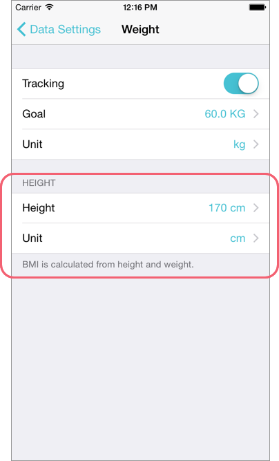
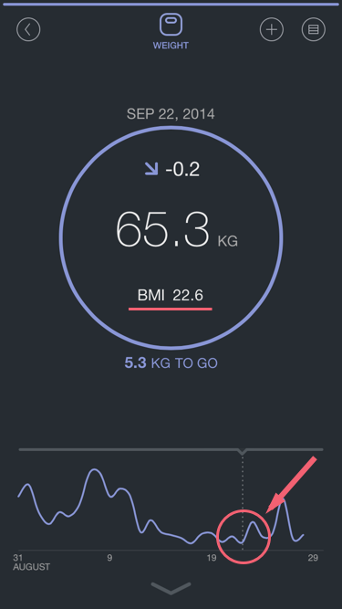

体重と身長を入力している場合、体重の詳細画面にBMIを表示させることができます。 ヘルスケアappに書き込みは行いませんので、BMI単体のグラフではそのデータは表示されません。
1. まずは、FitPortの設定画面で、身長を入力してください。 FitPort 設定画面 > データ設定 > Weight

2. Weight（体重）の画面で、グラフを長押しすることでBMIを見ることができます。
